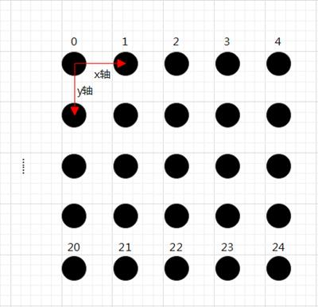

|
类型 |
标定 |
|
描述 |
根据输入像素坐标相邻两点的实际间距计算出像素坐标和世界坐标的映射点对，输出排序好的像素坐标和世界坐标。 此算子实现两个功能： 一是根据默认选择的世界坐标系（通常根据标定板的实际情况选择左上角3个点或左下角3个点构成世界坐标系）将像素坐标和世界坐标排序好输出，排序方式：根据世界坐标值y从小到大，x从小到大依次排序； 二是将像素坐标和世界坐标一一对应。wpts中世界坐标原点处的值为(0,0)，对于尺寸测量或面积测量来说只需要测量目标的相对距离，所以并不需要知道真实的世界坐标原点，可直接用于标定。而对于机台走绝对机台坐标时，则需要修改wpts中像素所对应的每个世界坐标值，再进行标定
别名：ZV_CALGETPTSMAP |
|
语法 |
ZV_CalGetPointsMap(pptsIn,ppts,wpts,dis)
参数： pptsIn：ZVOBJECT类型，输入参数，输入的像素坐标，矩阵类型N行2列 ppts：ZVOBJECT类型，输出参数，排好序的像素坐标，矩阵类型N行2列 wpts：ZVOBJECT类型，输出参数，排好序的世界坐标，矩阵类型N行2列 dis：输入参数，水平或垂直两相邻点的实际距离，dis为一个数值，单位可以是(毫米mm)，(厘米cm)，(分米dm)，(米m)，大于0 输出点的排序方式如下图所示：  |
|
适用控制器 |
支持ZV功能或者5系列以上的控制器 |
|
例子 |
ZVOBJECT img,pts,img_pts,world_pts ZV_ImgRead(img,"tool3.jpg",0) '读取图片 ZV_CalGetScaPoints(img,pts,128,0,500,5000) '提取标定板圆心坐标
ZV_CalGetPointsMap(pts,img_pts,world_pts,10) '从点集pts中计算对应点的像素坐标和世界坐标 ZV_MatGetRow(img_pts,0,2,0) '获取第一个点像素坐标 ZV_MatGetRow(world_pts,0,2,10) '获取第一个点世界坐标 ?"第一个点像素坐标:",TABLE(0),TABLE(1) ?"第一个点世界坐标:",TABLE(10),TABLE(11) |